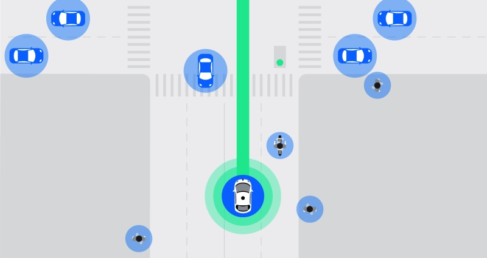
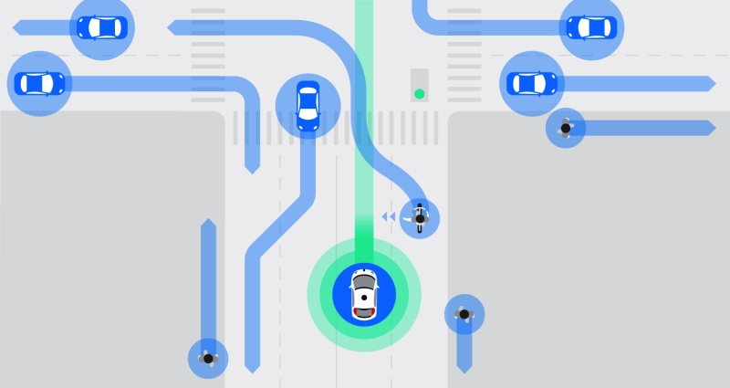

Waymo began as the Google self-driving car project in 2009.
Today, we're an independent self-driving technology company with a mission to make it safe and easy for everyone to get around—without the need for anyone in the driver’s seat.
Our vehicles have sensors and software that are designed to detect pedestrians, cyclists, vehicles, road work and more from up to three football fields away in all 360 degrees.
In the following situation, our vehicle is about to drive straight across an intersection with many other road users nearby, including a cyclist up ahead.
Our sensors and software detect and predict the behavior of not only the cyclist, but of all the road users around us.
We rely on 5 million miles of real world experience to teach our cars to navigate safely and comfortably through everyday traffic.
We’ve put our technology through the world’s longest and toughest ongoing driving test.
Each day, our vehicles can be found test driving on closed courses, on public roads, and in simulation.
Our sensors observe that the cyclist has extended their left arm.
Detecting the cyclist's hand signal, our software predicts that the cyclist will move to the left side of the lane.
Our software plans for our vehicle to slow down and make room for the cyclist to pass safely and comfortably ahead of us.
deaths worldwide due to vehicle crashes in 2014